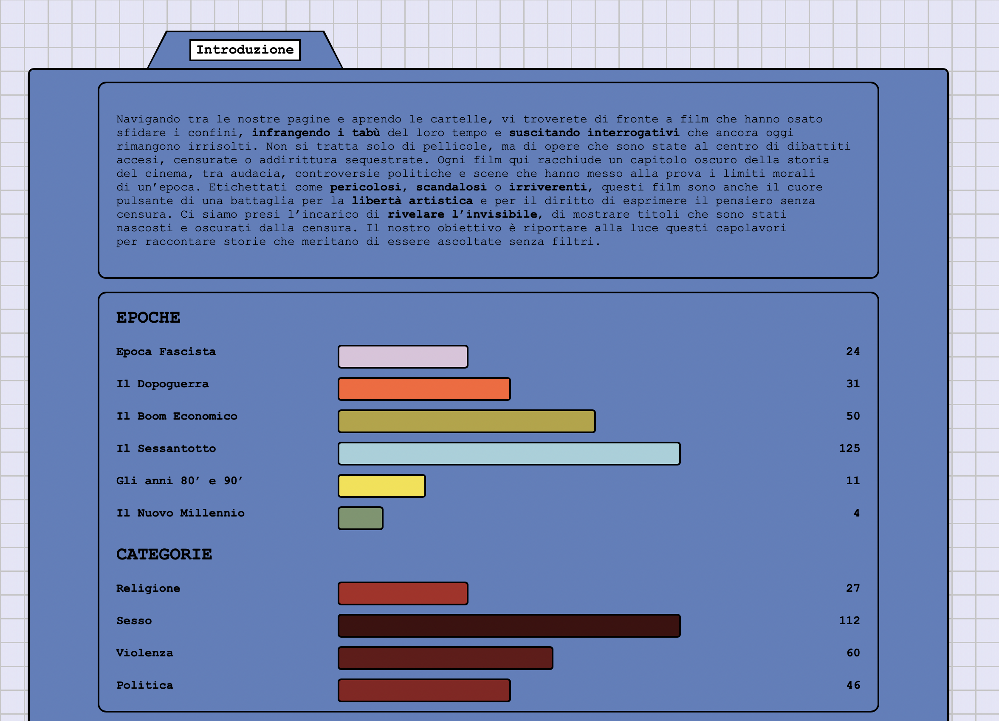
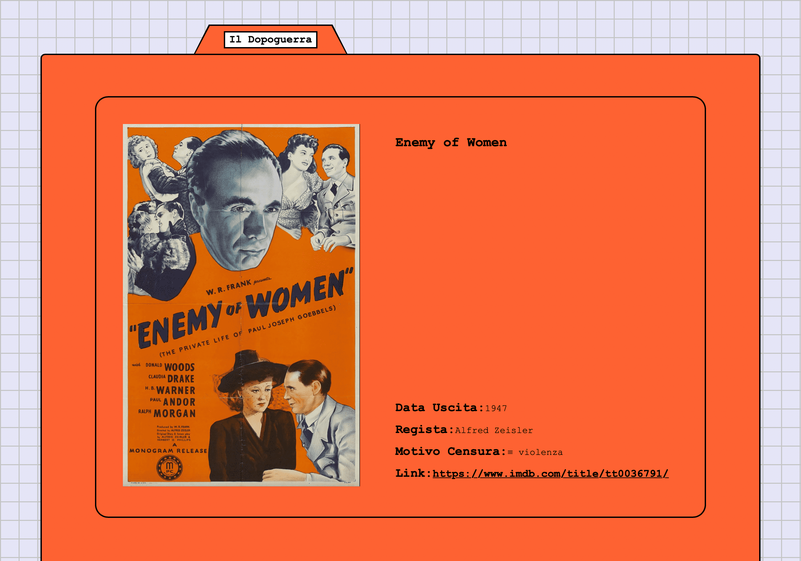
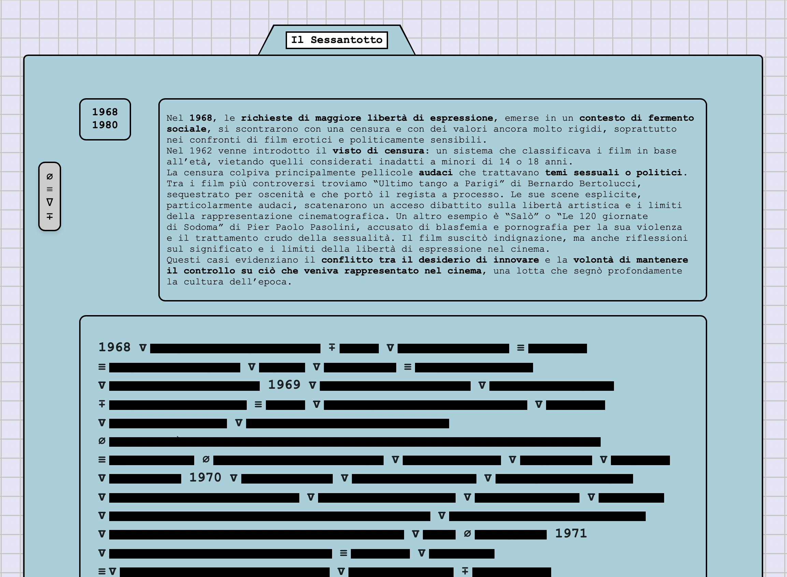
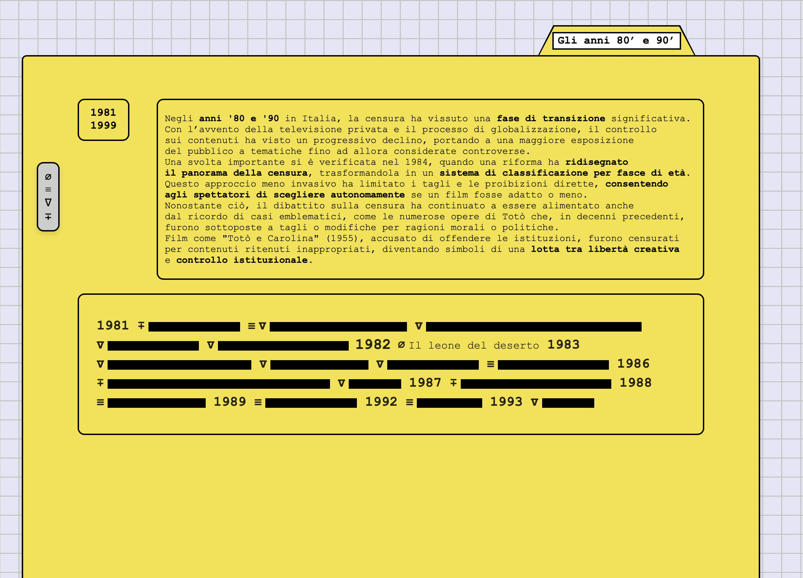

CINECENSURATI
Questo progetto web esplora il tema della censura cinematografica in Italia, traendo ispirazione dal concetto più ampio di “temi invisibili”. La pagina è progettata per raccogliere e presentare dati sui film censurati attraverso un’interfaccia visivamente coinvolgente di tipo skeuomorfico. I film sono organizzati in cartelle, simili a quelle di un computer desktop, suddivise per periodi storici e motivazioni della censura.
Gli utenti possono interagire con l’interfaccia per scoprire i titoli censurati. Inizialmente nascosti sotto bande nere, i nomi dei film sono accompagnati da icone che simboleggiano la ragione della censura. Cliccando sulla barra di censura, è possibile rivelare il titolo e accedere a una scheda informativa dettagliata sul film.



